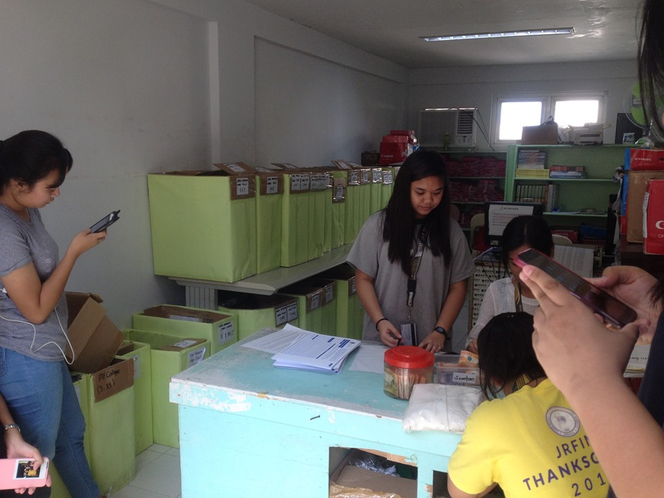

Business Center Transaction System
This system provides numerous of features and capabilities. Let's start with the advantages: This website is designed to prevent students from wasting their time falling in line just to get a university uniform or uniforms. It affects numerous of things like being late from their next class or worst of all being absent and sacrificing that subject just to get the uniform. This provides a lot of capabilities. It works like this: The admin is the only one allowed to access this website because that is the main purpose of it. There is a queuing area for scheduling when they will get their uniforms and it will give them a receipt and pass it unto the next phase which is getting the uniform from the main business center which they have the stocks of different categories of uniform. They will present their receipt given by the admin and finally they'll receive their uniforms with ease and time-consuming. We created this website simply because we want to help students conserve their time instead of falling in line for hours. The approximate time limit per person in queue is 1 minute, same thing goes when they are gonna ask for receipt from the admin.
